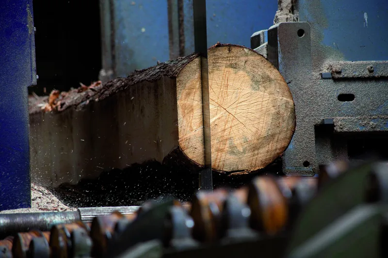
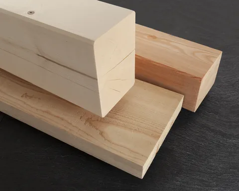
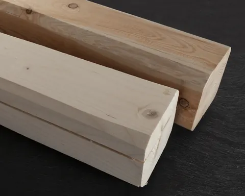
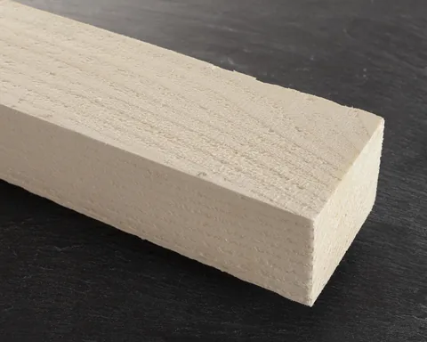
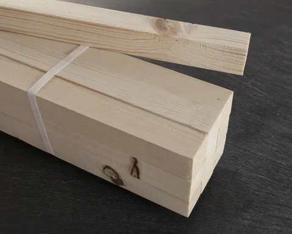
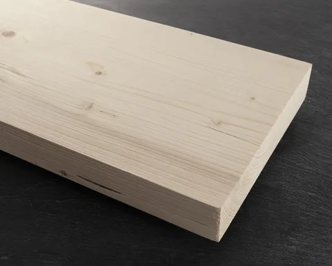
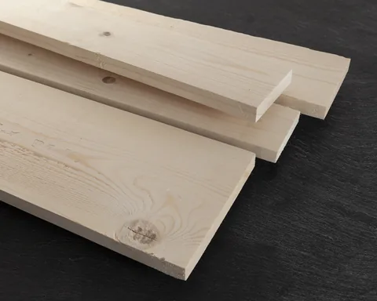
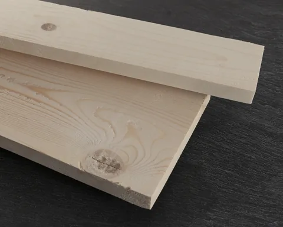
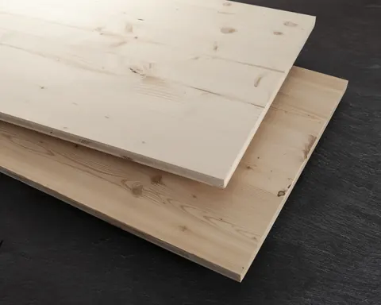
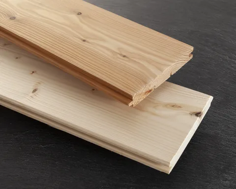

Legname da costruzione
Due linee di segagione, un impianto multilame e un refendino: la quantità, la sezione e la lunghezza che vi servono, in tempi brevi. Per privati, magazzini e imprese.

Cosa produciamo
Legname per l'edilizia, tagliato e lavorato qui. Chiedeteci anche le misure che non trovate in elenco: la segheria è fatta apposta per adattarsi.

Travi su distinta
Uso Fiume e uso Trieste
Morali e listoni
Listelli
Tavole da ponte
Sottomisure
Prismato per edilizia
Pannelli a tre strati
Perline
- Travi su distintaIn massello, bilama e lamellare, sulla vostra distinta.
- PiallatoPer le parti a faccia a vista.
- Finestre per tettoCon il cassonetto in legno.
- PannelliPer armatura, compensati fenolici, OSB e multistrato.
- Perlinati e pavimentiAbete e larice, e parquet Parkemo. Vedi
Per un ordine veloce: 0465 621159.
Quanti metri cubi sono?
Il legname si conta a metri cubi. Mettete il numero di pezzi e le misure di uno: il conto lo fa la pagina.
È solo un aiuto per la richiesta. Il prezzo dipende da essenza, qualità e lavorazione: ve lo diamo noi.
Come lo lavoriamo
Il legno che vi portate via è passato dalle nostre macchine, dal tronco al pezzo finito.
- Due linee di segagione
- Linea doppia Primultini, con impianto multilame e refendino.
- Essiccatoio
- Essiccazione a forno, per ridurre l'acqua presente nel legno.
- Marcatura CE
- Legno massiccio a uso strutturale, classificato secondo la resistenza (UNI EN 14081-1).
- Imballaggi da esportazione
- Certificazione fitosanitaria FITOK.
Domande sul legname
Vendete anche ai privati?
Sì: lavoriamo per privati, magazzini e imprese.
Tagliate su misura?
Sì. Le due linee di segagione, il multilame e il refendino servono proprio a questo: quantità, sezione e lunghezza secondo la vostra richiesta, in tempi brevi.
Il legno è secco?
Abbiamo l'essiccatoio: l'essiccazione a forno riduce l'acqua presente nel legno. Scriveteci nella richiesta se vi serve essiccato.
Cosa scrivo nella richiesta?
Prodotto, essenza, sezione, lunghezza e quantità, oppure la distinta completa. Il modulo di richiesta vi guida passo per passo.
Vi serve legname?
Diteci prodotto, essenza, sezione e quantità, anche con una distinta: vi rispondiamo con disponibilità e prezzo.
Telefono 0465 621159 · info@segheria-lombardi.it